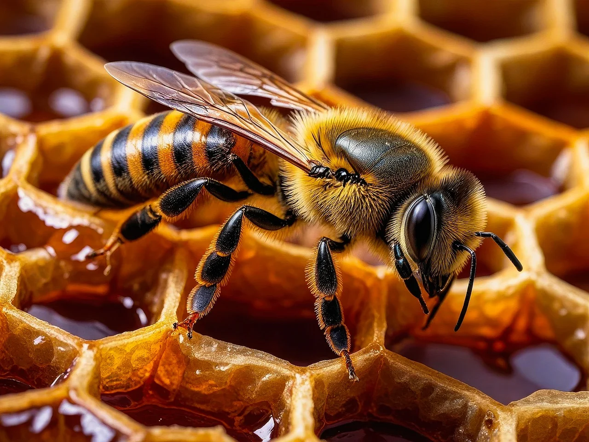

Startseite
Willkommen auf unserer kleinen, aber feinen Honig-Seite!
Unsere Geschichte
Was einst mit zwei Völkern begann, ist heute zu einem festen Bestandteil unseres Familienlebens geworden. Die Liebe zur Natur und das faszinierende Zusammenspiel in einem Bienenvolk haben uns dazu inspiriert, mit der Imkerei zu beginnen – zunächst ganz klein, mit nur zwei Bienenvölkern. Über die Jahre ist aus dieser Leidenschaft ein echtes Familienhobby geworden. Mit viel Geduld, Neugier und einem wachsenden Verständnis für die Bedürfnisse der Bienen wuchs auch unsere kleine Imkerei. Inzwischen kümmern wir uns um acht Völker – jedes einzelne davon ein kleines Wunderwerk der Natur. Zweimal im Jahr, in den Monaten Juni/Juli sowie August/September, ernten wir den Honig, den unsere Bienen aus dem Nektar umliegender Blüten und Pflanzen sammeln. Der Honig schmeckt dabei jedes Jahr ein wenig anders – je nachdem, welche Blüten in der Umgebung zur jeweiligen Zeit besonders reichlich vorhanden sind. So spiegelt jedes Glas Honig ein Stück Natur und Jahreszeit wider. Für uns ist die Imkerei mehr als nur ein Zeitvertreib. Sie verbindet uns als Familie, lässt uns die Natur bewusster erleben und gibt uns die Möglichkeit, einen kleinen, aber wichtigen Beitrag zum Schutz der Bienen zu leisten. Denn Bienen sind nicht nur Honiglieferanten – sie sind zentrale Bestäuber für unsere Pflanzen und damit unverzichtbar für das ökologische Gleichgewicht. Unsere Bienengeschichte zeigt: Aus einer kleinen Idee kann etwas Wundervolles entstehen – wenn man mit Herz, Verstand und Geduld dabei ist.

Unsere Produkte
- Blütenhonig – mild und aromatisch
- Cremehonig – kräftig im Geschmack
- 250 gramm kosten 4€ – 1Kg kostet 13€
- Pro Glas werden 1€ Pfand verrechnet
- Erhältlich nur direkt bei uns auf Anfrage
Kontakt
Hast du Fragen zu unseren Produkten oder möchtest du Honig bestellen? Schreib uns gerne!